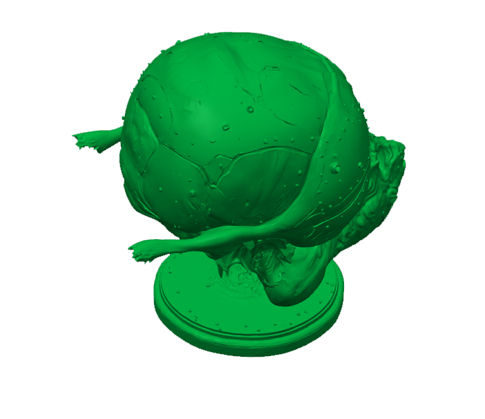
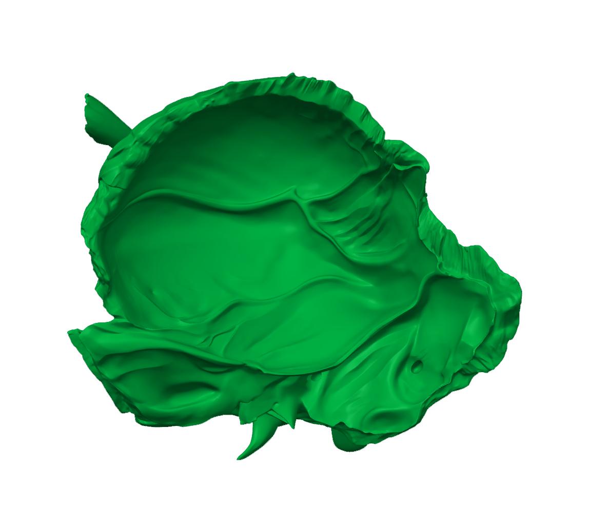
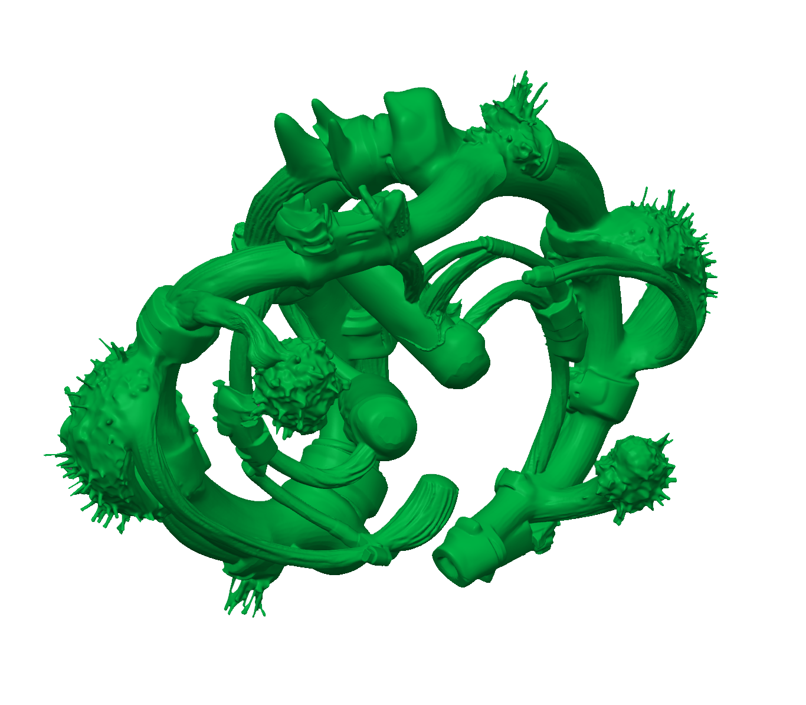
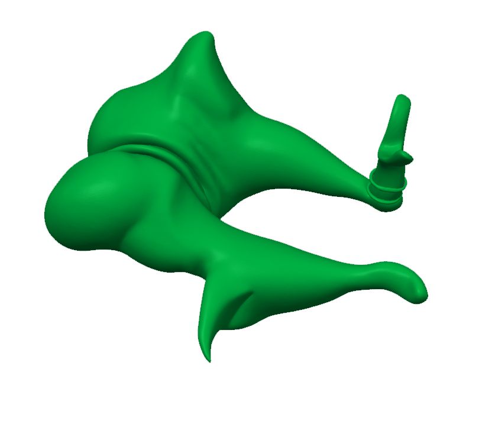
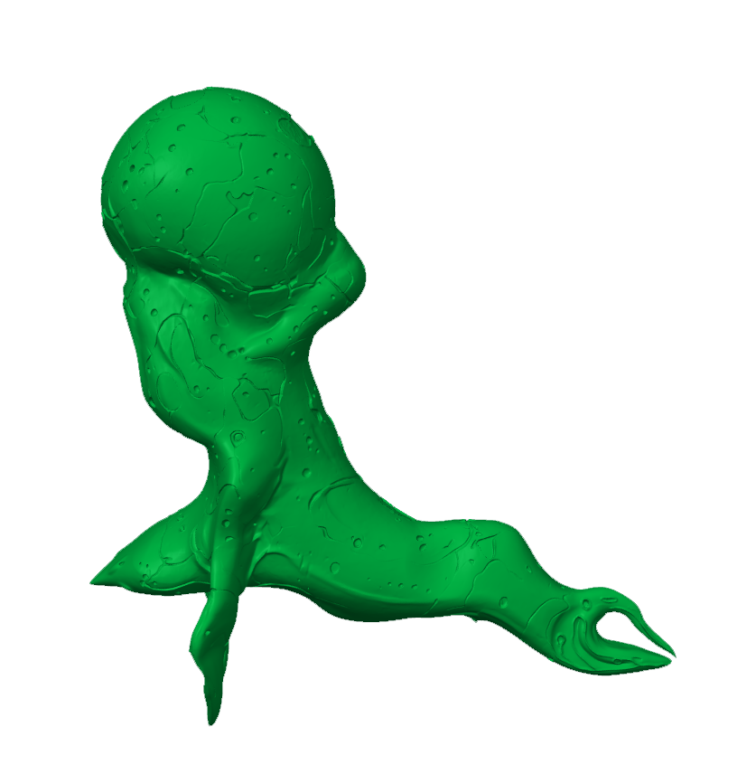
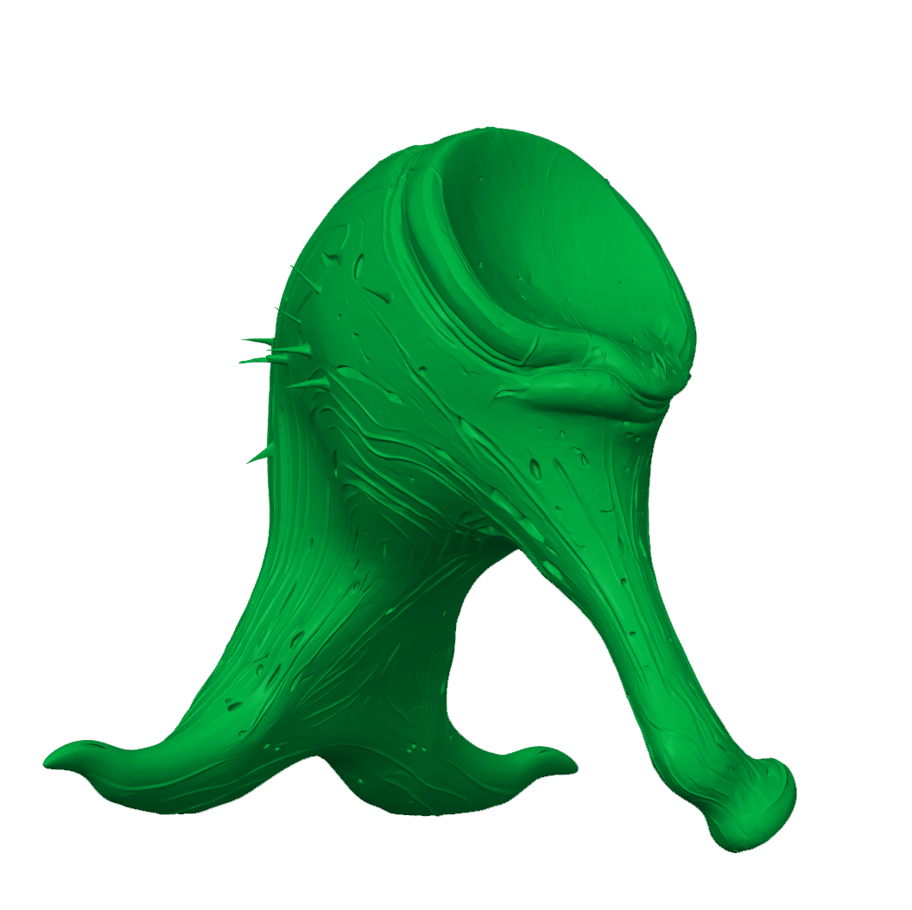

In the multidisciplinary practice of Natalia Jordanov, sculpture, digital media, audio and conceptual thinking converge. She conceives her installations as self-contained worlds in which she explores new connections and relationships. In the installation From Jaw to Ear, From Bone to Signal (2026), Jordanova speculates on the future of humanity and technology. Her point of departure is the remarkable evolutionary history of the three smallest bones in the human body, the auditory ossicles (the malleus, incus and stapes). These bones were once part of the jawbones of reptiles, playing a role in strength and survival. Over time, however, they evolved into instruments of perception. As such, they embody a shift from biting to listening, from physical aggression to receptivity.
Jordanova uses this biological leap as a mirror for another form of evolution: that of technology. Algorithms and artificial intelligence began as instruments of control and processing, but in her view are increasingly becoming mediators of meaning. Like the ossicles, they move from power to attention, from aggression to resonance.
The installation makes this dual journey tangible. Jordanova enlarges the ossicles and reshapes them using generative AI into sculptural forms that imagine a hypothetical evolution. The sculptures ‘listen’ to environmental data and translate it into sound, which viewers can access via an online channel. In this way, a hybrid, network-like organism emerges – one that does not speak, but listens; does not transmit, but receives. With From Jaw to Ear, From Bone to Signal, Jordanova creates a post-anthropocentric entity that speculates on how evolution and technology together might give rise to new modes of perception.
Text by Sarah van Binsbergen